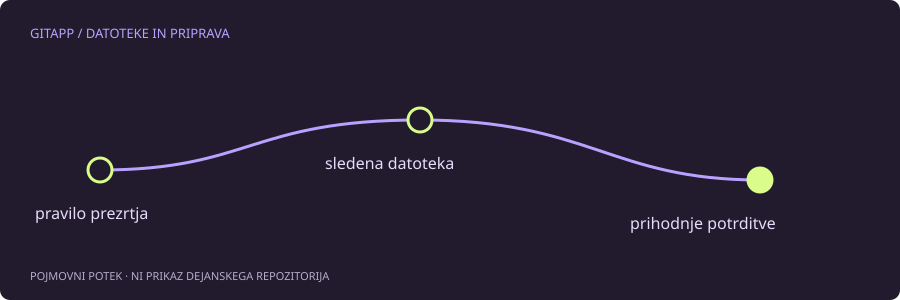

Pravilo ni brisanje zgodovine
Datoteka .gitignore predvsem določa, katere nesledene poti naj Git prezre. Če je datoteka že vključena v indeks oziroma zgodovino, dodano pravilo ne odstrani njenega sledenja. Zato lahko vpišeš ime datoteke med pravila in še vedno vidiš njene spremembe v git status.
To je posebej pomembno pri konfiguracijskih datotekah in skrivnostih. Če je bil žeton že objavljen, ga dodatek v .gitignore ne skrije iz preteklih potrditev. Tak žeton je treba obravnavati kot razkrit in ga preklicati oziroma zamenjati po postopku ponudnika.
Najprej ugotovi stanje poti
Za primer uporabimo datoteko nastavitve.local. Pred kakršno koli spremembo preveri:
git status --short
git ls-files -- nastavitve.local
git check-ignore -v --no-index -- nastavitve.localls-files pomaga ugotoviti, ali je pot v indeksu. check-ignore z možnostjo --no-index omogoča pregled ujemanja pravil tudi za že sledeno pot. Izpis pravila še ne pomeni, da je datoteka odstranjena iz zgodovine ali priprave.
Kaj pomeni odstranitev iz indeksa
Če želiš lokalno datoteko ohraniti, v prihodnjih potrditvah pa je ne želiš več slediti, obstaja git rm --cached. Ukaz spremeni indeks in pripravi odstranitev datoteke iz naslednjega posnetka; lokalna datoteka ostane. Tak korak je sprememba projekta in ga je treba pregledati ter potrditi.
Ne kopiraj rekurzivnega odstranjevanja celotnega indeksa, če želiš urediti samo eno datoteko. Omejitev na eno znano pot zmanjša možnost nenamernega posega. Pred ukazom preveri tudi pripravljene spremembe, saj dodatna vsebina v indeksu vpliva na to, kaj bo naslednja potrditev vsebovala.
Kaj se zgodi sodelavcem
Če datoteko odstraniš iz naslednje potrditve, to vpliva tudi na druge uporabnike, ko vključijo spremembo. Ne gre samo za osebno nastavitev prikaza. Pri projektni konfiguraciji je pogosto primeren sledeni vzorec brez skrivnosti in ločena lokalna datoteka s pravili prezrtja.
Če potrebuješ osebno pravilo za nesledene datoteke, obstajajo tudi lokalni izključitveni mehanizmi. Izbira je odvisna od tega, ali naj pravilo velja za celoten projekt ali samo za tvoje okolje.
Preverjanje uspeha
Pred potrditvijo preglej git diff --cached in preveri, ali je pripravljena točno pričakovana odstranitev iz posnetka. Nato preveri obstoj lokalne datoteke in ujemanje pravila. Uspeh pomeni jasno prihodnje stanje, ne izginotje stare vsebine iz vseh klonov, predpomnilnikov in zgodovine.
Vir in obseg
Referenca: uradni priročnik za gitignore. Primeri so pripravljeni za učenje in niso opis posega v dejanski projekt. Preberi način preverjanja.